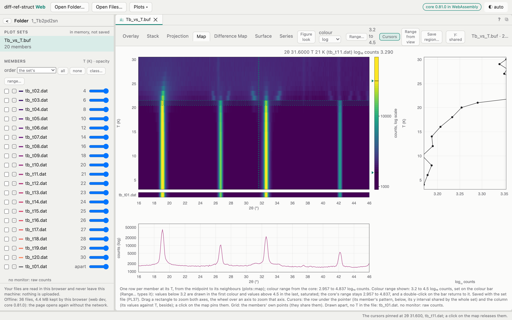

Every control of the page, what it does and what the core computes behind it; the limits of this version said plainly. Written from the page's code and checked against the core on real data.
Download the PDF LaTeX, the site's typefaces Quick reference · its PDF
For diff-ref-struct Web 1.0.0 with core 0.81.0, at https://jmigartua.github.io/diff-ref-struct-web/. The page shows the version it runs at the foot of its start page and in the line under the inspector, and its Help ▾ menu opens the manual of that version. The manual ends with three appendices made from the guide’s records: A, Conventions (the words, files, suffixes and names), B, Release notes (every version up to this one) and C, Roadmap.
The site’s Recipes work through the analyses the page is made for (a temperature ramp, a hold at constant temperature, two patterns compared, a run followed live), and its Quick reference fits the controls on one page.
diff-ref-struct Web is the Plots module of the diff-ref-struct Mac app, running in a browser page. It shows many powder-diffraction patterns at once as a plot set. You can view them as:
Three things set it apart from a plotting web page:
What it is not: it is not the refinement program. The Rietveld refinement, the Data module’s operations, Publish’s figures and the project’s files belong to the Mac app. The browser page is for looking at data, comparing patterns, following a series and finding where things change.
| what | needed |
|---|---|
| Browser | Any current browser. Chromium-based browsers (Chrome, Edge, Arc, Brave) do the most: they open a folder in place, so that live mode works (§15). Firefox and Safari open a folder through the browser’s folder dialog instead, which takes a copy of the list once; live mode is not offered there. |
| Network | Only for the first visit. After it the page keeps itself and opens offline (§17). |
| Memory | Ordinary sets (tens of files) need nothing special. A run of a hundred synchrotron scans of 27 000 points each (112 MB) works; allow a few hundred MB of memory for the tab. |
| Files | Text data files up to 64 MB each (§21). Larger files are listed but not read. |
Permissions. When you open a folder, Chromium asks “Let site view files?”. The page asks only to read and never writes into the folder. Firefox and Safari may word their dialog as an “upload”. It is not one: the files stay in the browser.

From top to bottom: the bar; at the left the inspector, and the separator at its right edge; at the right the views, one tab per plot set, each with its view tabs, toolbar, plot and note; at the foot the status line.
The bar, left to right:
.drv) or a WinPLOTR buffer (.buf).The inspector (the column at the left), top to bottom:
< shrinks the inspector to a narrow rail and > brings it back.The separator between inspector and views: drag it to set the inspector’s width (220–640 px), or double-click it to shrink the inspector to a rail and back. With the keyboard, focus it and use ← → (16 px a step, 64 px with ⇧). The width is kept for your next visit. On a narrow window (under 640 px) the inspector stacks above the views.
The views take the rest of the page: one tab per plot set, each with its view tabs and toolbar (§8). Before anything is open, a start page shows the two Open buttons and the version.
The status line at the foot says what the last action did (“Plots: 39 members …”) or why it could not. Messages in red are refusals or problems. Read it whenever something seems not to happen.
There are three ways, and every one of them reads the files in the browser only. A fourth needs no files of yours: Try the example on the start page opens a synthetic heating run computed by the core (21 scans of a periclase sample from 300 to 1300 K, with corundum appearing above about 1000 K), as if its folder had been dropped.
Open Folder… (bar or start page). Choose a folder. Its files appear in the tree, sub-folders included. Hidden files and folders (names starting with ., such as .DS_Store or .git) are left out. The page lists the files at once and reads a file’s content only when the core needs it. Then:
.xye file, a FullProf free-format file, a buffer, a plot set file …, or “?” for something no reader recognises). The tree fills in each file’s kind as the answers come. For a hundred large synchrotron files this takes about a minute.Open Files… (bar or start page). Choose one or more files. They join the folder already shown, or make a new one if none is, and they open in Plots at once (§6 says as what).
Drag and drop. Drop anything from the Finder (or Explorer) anywhere on the page:
A page holds one folder at a time. Opening another folder replaces the tree. Plot sets already open stay in their tabs.
Each row of the tree shows a file’s name, its kind as the core says it (xye, free_steps, buffer_file, plot_set, or ?) and its size. Hover a row for the file’s path, its size and the core’s full description.
folders | kinds (the switch on the Files header) chooses how the tree is listed:
The choice is kept for your next visit. The header also counts the files and their total size.
Choosing files. A click chooses a file, ⌘-click (Ctrl-click on Windows and Linux) adds or removes one, and ⇧-click chooses a range. Open as Plot Set then opens the chosen files; it says “Open 12 as Plot Set” when 12 are chosen.
Opening directly.
Whatever you open (a double-click, Open as Plot Set, a folder’s “set”, files dropped or picked), the page asks the core what each file is and routes it accordingly:
| What is among the files | What opens |
|---|---|
a plot set file (.drv) |
the set it describes, with its members, variables, view settings, clips and regions. Its member files are taken from the folder by the names the .drv keeps (see below). |
a WinPLOTR buffer (.buf) |
the buffer’s set, its files taken from the folder by the names it lists. |
| data files only | one new plot set with those files as its members, in name order. The core reads each member’s variable from the file if it can: a temperature in its header, or in its name (_300K, T300, T0900C …), or an elapsed time (t16530s). |
something else (a .pcr, an image, an unrecognised file) |
left out. The status line names it and says what the core says it is. |
A .drv or .buf needs its files where it names them. A plot set file written by the app names its members relative to the project folder, for example Data/scan_001.xye for a .drv kept in Plots/. So open the project folder (the one that holds Plots/ and Data/), not the Plots/ folder alone, and then open the .drv from the tree. A member whose file is missing is named in the status line.
The same set file opened twice brings its tab forward instead of opening a second copy.
When a folder is opened, the core reads all its data files and proposes the plot sets they make. The section Sets in this folder lists them, each with an Open button, a title and the number of members. Hover a proposal for the core’s kind and exposure class and for the files it leaves out, with the reason.
The kinds of proposal:
Where the variable comes from:
t00000s) or, failing that, from the files’ modification times.Rebinning on opening. For large scans (tens of thousands of points), the proposal says “rebinned to 0.01°”. The core then averages the points onto a 0.01° grid as the set opens, so that the map and the overlay draw in about a second instead of minutes. The files themselves are not touched.
Files that fit no proposal (a background scan with no temperature in its name, for example) are listed under “Left out of every set” with the reason.
Open opens the proposal as a new plot set. A proposal opened this way is also remembered for live mode: when new scans of the same kind and class appear in the folder, they are added to it (§15).
Important in this version: proposals against time. A proposal opens from its files, and each member’s variable is read again from the file, not from the proposal. Where a file’s name gives both a temperature and a time (as in
…_T1270C_t16530s_…), the members open by temperature, with the time only as a second variable. A by-temperature proposal is therefore right. A hold or a run against time opens with every scan of a hold at the same temperature, so its map collapses onto one line. Until this is fixed, open sets against time from a plot set file (.drv) that types each scan’s time (the site’s recipe A hold: growth curves shows how). The status line says when a proposal’s values were not carried.
Each plot set opens in a tab of its own in the views area. Tabs can be dragged to rearrange them, and closed with their ×. The ? at the top right of the views opens this manual at the section of the view shown. Above the plot, the tab shows:
| control | in | does |
|---|---|---|
| y linear / √ / log | Overlay, Stack, Projection, Series | the intensity axis’s scale |
| Linked zoom | Overlay | a second, zoomed plot beside the first, with a difference strip (§10) |
| Δ and its rule | Stack, Projection | the steps between members (Set Displacement…) |
| Draw window | Overlay, Stack | the next drag across the plot draws a window of 2θ (§12) |
| Figure look | all but Surface | the view as a figure: white, open axes, ink text, a scale bar for a stack or a projection |
| colour linear / √ / log | Map, Difference Map, Surface | the colour scale |
| Range… and its clip | Map, Difference Map, Surface | type the colour range (§11) |
| Cursors | Map, Difference Map | the row and column strips (§11) |
| Range from view | Map, Difference Map | the colour range follows the zoom (§11) |
| Save region… | Map, Difference Map | name the rectangle shown (§11) |
| y: shared / y: own | Overlay, Stack, maps | one y range for the whole set, or each member’s own |
| of the map / the difference map | Surface | which map the surface shows |
| quantity, background, + window | Series | what the series follows (§12) |
Below the plot, a short note explains what the view shows and mentions anything left out or drawn apart.
When a plot set is shown, the inspector holds its panels:
Plot sets (“in memory, not saved”): one row per open set. Click a row to switch to that set.
Windows (2θ, °): the set’s windows of 2θ (§12). Click a row to choose the window, double-click to rename it, and × removes it.
Regions: the named rectangles of the map (§11).
Members: one row per member, with its variable’s name and unit in the header. Each row shows:
Mouse on the member rows:
The control row above the members:
Notes at the foot of the panel say, for example, “no monitor: raw counts”, or which members are “Drawn apart (no T in the file)”.
The member (fold it open): with nothing chosen it describes the set: whether all members share one grid, the counts, and how the view is set. With a member chosen it shows:
Every value keeps its source. Set Temperature… asks for the value and where it comes from (a logbook, a thermocouple file, “nominal set point”). The page refuses a value without a source: the source is saved with the value. Read Variable From… reads the values again from the files’ names or from the files themselves.
All views share the same mouse controls (§18). In short: drag a box to zoom, double-click to see everything, ⇧-drag to pan.
Every member drawn as a curve on the same axes, coloured along the set’s order. Hover a curve to thicken it. ⌥-click a curve to solo it, and ⌥-click again to show all.
With y: own, the y range fits the chosen members. With y: shared, it is the core’s extent of the whole set, so that the scale does not jump as members are switched.
Linked zoom splits the overlay in two:
Large sets are drawn in slices. The status line counts them (“Overlay: drawing 60 of 100 members…”) while the page stays responsive.
Each member raised by a step above the one before and labelled at its baseline with its value (“1270 °C”), or with its name and “(no T)”. The core proposes the step from the data; Δ or Set Displacement… sets your own:
The y label reads “counts + each member’s step”: the numbers on the y axis hold for the first member only. In Figure look a scale bar replaces the y axis for that reason.
WinPLOTR’s pseudo-3D view: each member drawn behind the one before, shifted by Δx and Δy, its hidden parts removed, with an oblique axis carrying the variable. The view stays empty until you give it steps with Δ (Set the Projection’s Steps); it keeps steps of its own, separate from the Stack’s.
Intensity as colour, with 2θ across and one row per member up the side at its value of the variable. Each row spans halfway to its neighbours, so uneven steps in temperature or time show as rows of different heights. This is the view for following peaks through a series: a phase appearing, a peak moving, a transition. §11 covers it in detail.
The map of each member less a reference member. Choose a member and Set Reference first (until you do, the warmest member placed is the reference). Values above zero and below zero are told apart by the colour ramp. The log scale is not offered, since differences can be negative: log falls back to signed √.
The map, or the difference map (of on the toolbar), as a 3D surface:
The map’s colour range also limits the height. Copy Surface as Image (menu) copies it to the clipboard as a PNG.
The quantity chosen for each window of 2θ, against the variable, with ±σ error bars. Points below 2σ are drawn open. Each window has its own colour and marker. With no window yet, the view tells you to add one (§12).
Reading the map. The colour bar at the right gives the scale: “counts”, “√counts” or “log₁₀ counts”. In the Difference Map it says what was subtracted (“less 1300 °C (name), counts, signed √ scale”). The readout follows the pointer and shows:
The right-hand axis. When the members carry a second variable (for a set against time, the temperature of each scan), the right-hand axis labels each row with it. You can then read the time on the left and the temperature on the right.
Colour scale (colour on the toolbar): linear, √ or log. √ is often best for diffraction: it compresses the strong peaks less than log and still shows the weak ones.
The colour range: the clip. The core gives the full range of the data. Strong peaks usually take the whole colour ramp, leaving the weak features in one colour. To go down to the details, clip the range:
The clip is kept per view and per scale. It is saved with the set (§13) and carried in the page’s address (§16). Changing the scale starts again from the core’s range for that scale.
Range from view. Switched on, the colour range follows the zoom: whenever you zoom, the core gives the range of the rectangle shown, and the colours spread over that rectangle alone. Switched off, the earlier clip comes back.
Zoom.
The zoom is kept when you switch views and back.
Cursors (the toolbar’s Cursors, or Row and Column Cursors):
Turning Cursors on switches to the Map if another view is shown. The strips’ y range follows y: shared / own as in the Overlay. Cursors are not drawn in Figure look.
Regions: named rectangles. A region keeps a place of the map worth coming back to, such as a peak’s onset or a window where a phase grows.
Two regions cannot share a name. Regions are saved with the set (§13). A set file made in the Mac app brings its regions with it.
Members drawn apart. A member with no value of the variable has no place on the map’s axis. It is drawn as a separate row and named in the note (“Drawn apart, no T in the file: …”). Give it a value with Set Temperature… to place it.
These change the view, never the files (“A view: the files untouched”, says the status line).
Normalise… puts the members on a common scale. It offers:
The fields are Normalised to (the value), From, 2θ (°), To, 2θ (°) and Background (auto, or a line between the ends). Members the rule cannot normalise (no monitor, for example) are left out of the view and listed. The title strip then shows “· normalised”.
Convert X… draws the set against another variable:
Every conversion but the first needs each member’s wavelength. If some files state none, a chooser offers a λ typed now (with its source) or none: leave them out, listed. Set Wavelength… sets the λ of the chosen members, with its source.
Windows are ranges of 2θ followed through the set: a peak, a group of peaks, a band. There are three ways to make one:
.drv already carries.To work with a window:
The Series view plots, for every window, one quantity against the variable:
The background under a window is either automatic (the arPLS baseline GSAS-II uses) or a line between the ends of the window. The integral of a peak’s window against temperature or time is the usual way to follow a phase’s growth.
Save Plot Set (Plots ▾) writes the set as a plot set file, <name>.drv. In the browser it is downloaded to your Downloads folder: nothing is written into the folder you opened. The .drv keeps:
It is a plain text (TOML) file, read by the Mac app and the command line drs as well as by this page.
To open it again later:
.drv into the folder’s Plots/ sub-folder, or next to the data files. It must be placed where its member names resolve: §6..drv.Or drop the .drv on the page while the folder is open.
Save Plot Set As…: the same, with a new name.
Copying. The bottom table’s Copy (or ⌘C on selected rows) copies its rows as tab-separated text, ready to paste into a spreadsheet. Copy Surface as Image copies the surface as a PNG.
Viewer Page… (Dev): downloads a single HTML file, <set> map viewer.html, holding the map viewer and the set’s maps, members, clips and regions. It opens in any browser, offline, without this page or the files. It is marked Dev because it is a developer’s tool; it has not been checked in the browser host in this version.
Not in the browser in this version (they belong to the Mac app or need a later core build; §20):
A screenshot of the view in Figure look is the stop-gap for a figure.
The Plots ▾ menu lists the module’s commands in the app’s order. A greyed item explains itself on hover. Marks: ✓ a toggle that is on; (app) an item that belongs to the Mac app and does nothing useful in the browser; (later) an item this browser core does not serve yet: it answers in the status line no command “…” in the browser’s core (drs-wasm 0.81.0): the app’s core has it, this build not yet.
Opening
| item | does |
|---|---|
| New Plot Set… | an empty set, then Add Files… for its members (choose them in the tree first) |
| Open Plot Set… | opens the .drv chosen in the tree |
| Open Buffer… | opens the WinPLOTR .buf chosen in the tree |
| Open CSV as a Set… | the chosen files as one set (what Open as Plot Set does) |
| Add Files… | adds the files chosen in the tree to the set shown |
| Open Sequence (.seq)… | FullProf’s sequential results against their external parameter (later) |
| Open Results Series… | a series of refinements against T (later) |
| Send Series to Publish… | (app), always greyed here |
The open panels of the browser are the tree: choose the files in the tree first, then the command. With nothing suitable chosen, the status line says what to choose.
Saving and output
| item | does |
|---|---|
| Save Plot Set / Save Plot Set As… | downloads the .drv (§13) |
| Reload Members | reads the members’ files again (later) |
| Plot Set as CSV… | wide or long CSV of the set (later) |
| Send to Publish… | (app): saves (downloads), then says Publish is not in this app |
Views and map tools
| item | does |
|---|---|
| Show Overlay / Stack / Projection / Map / Difference Map / Surface / Series | switch the view (✓ on the one shown) |
| Copy Surface as Image | the surface as a PNG on the clipboard |
| Linked Zoom | the overlay’s linked pair (✓) |
| Set Colour Range… / Reset Colour Range | type the clip / back to the core’s range (map views and Surface) |
| Row and Column Cursors | the strips (✓) |
| Range from the View | the clip follows the zoom (✓) |
| Save Region… / Rename Region… / Remove Region | the map’s regions |
| Y Interval Adapted | ✓ = “y: own”, off = “y: shared” |
| Viewer Page… (Dev) | the self-contained map page, downloaded |
Choosing members: Choose All Members, Choose No Member, Choose by Exposure Class…, Choose by a Range of the Variable…, List Order…
Figure
| item | does |
|---|---|
| Figure Look | the view as a figure (✓) |
| Set Scale Bar… | the scale bar’s length in a stack or projection figure (empty: the core’s round step) |
| Figure Size… | journal and thesis widths from Publish’s presets (later) |
Normalisation and x: Normalise…, Convert X…, Set Wavelength… (§12).
Order: Reverse Order, Sort by Variable, Read Variable From… (the file’s name or the file itself work; a temperatures file is (later)).
Windows: Add Window…, Draw Window (✓), Rename Window…, Remove Window, Remove the Windows, Background at….
Opacity: Solo Member, Dim Others (others at 22 % opacity), Restore All.
Per member: Set Displacement…, Set Reference (also switches to the Difference Map), Set Temperature….
Derived: Sum of Members, Average of Members, Difference of Members (exactly two chosen: the first less the second). The core computes the pattern with its σ; the browser downloads it as <set> sum.xys (average, difference) and the status line says so.
Open in Data: (app).
At a beamline or a diffractometer, scans keep arriving in a folder. In Chromium, with a folder opened by Open Folder… or dropped, the page can watch it:
Your choice is kept for the next visit. At each reading:
The live line under the controls says what is happening: “Reading the folder every 10 s; 1 live set. …”.
Notes:
The page keeps the view shown in its address, after the #, updating it about once a second:
.drv or .buf, or the core’s proposal by kind and class;For example:
…/diff-ref-struct-web/#folder=1_Tb2pd2sn&set=buf%3ATb_vs_T.buf&view=map&scale=log&zoom=24%2C36%2C4%2C30&clip=3.2%2C4.5The address holds only names and numbers already on screen, never a file’s content. So:
The zoom is applied once the core’s map has been drawn. You may see the whole map for a moment first.
Cite this view (Help ▾) copies one line with the tool’s version, the core’s, the date and this address, for a lab book or a paper’s methods: J. M. Igartua, diff-ref-struct Web 1.0.0 (core 0.81.0), view of 26 October 2026: https://…/#folder=…. With the same files, the line brings the same view back.
On the first visit the browser keeps the page’s own files: the page, the module, the core in WebAssembly, about 36 files and 4.4 MB. From the next visit on, the page opens without the network. The line under the inspector says what is kept: “Offline: 36 files, 4.4 MB kept by this browser (web …, core 0.81.0)”. It never keeps your data files.
The guide offline too. On the same first visit the browser also keeps the guide’s pages and this manual’s PDF (not the screenshots, which it keeps once you have seen them), so the manual opens at a beamline without network.
Install the page as an app from the browser: in Chrome, the install icon in the address bar or ⋮ ▸ Cast, save and share ▸ Install page as app; in Safari, File ▸ Add to Dock; in Edge, ⋯ ▸ Apps ▸ Install. It then opens in its own window, from the Dock or the Start menu.
Updates. When a new version is published, the browser fetches it in the background and replaces the old one. A tab already open may keep running the old version until it is reloaded. If the version shown (start page, offline line) is older than expected, close every tab of the page and open it again.
On any plot
| action | does |
|---|---|
| drag a box | zoom both axes |
| ⇧-drag, middle-drag, or Space + drag | pan |
| two-finger scroll | pan (a mostly vertical scroll zooms x) |
| ⌘-wheel or pinch | zoom about the pointer |
| wheel over an axis’s margin (maps) | zoom that axis only |
| double-click | fit the whole plot |
| double-click on a colour bar | the core’s colour range again |
| drag a colour bar’s mark | clip the colour range |
| click (map with Cursors on) | pin or release the cursors |
| ⌥-click a curve (Overlay) | solo it, and again to restore |
| drag on the plot with Draw window on | a new window |
| drag a window’s edge | move it |
In the tree and the members: click, ⌘-click (Ctrl-click), ⇧-click to choose; double-click to open (tree) or to set a value (member without one); ⌥-click to solo (members).
In the bottom table:
Elsewhere: Escape closes the Plots menu; ← → on the focused separator set the inspector’s width.
Keyboard shortcuts. The Plots commands have no keyboard shortcuts in the browser: use the menu. In particular ⌘S is the browser’s “Save page”, not Save Plot Set. The status line’s “Save (⌘S)” is the Mac app’s wording.
Appearance: the ◐ button cycles auto, light and dark.
Accessibility: the tree, the menu, the separator and the status line carry their roles for screen readers. The status line is announced politely as it changes.
| the status line says | meaning, and what to do |
|---|---|
| Nothing to open as a plot set: x.pcr (…) | the files chosen are not data files. Choose data files, a .drv or a .buf. |
| … choose the files in the folder’s tree first (click, ⌘-click, ⇧-click), then the command again | a menu command needs files: choose them in the tree, then the command. |
| Plots: N members, k without a T (drawn apart) … | opened; k files gave no value of the variable. Set Temperature… places them. |
| no command “…” in the browser’s core (drs-wasm 0.81.0): the app’s core has it, this build not yet | the command needs the Mac app or a later web version (§20). |
| The core says: … (under a map) | the colour range typed hides much of the map; the core says how much. |
| To lies above from. / The pair … lies wholly outside the core’s range | the clip typed is reversed, or outside the data. |
| Show the map or the difference map first: a region is the rectangle it shows. | switch to a map view before Save Region…. |
| A region needs a name of its own … / A window needs a name of its own … | the name is taken. |
| Say where the value comes from: it is kept with it. | a typed temperature or λ needs its source. |
| Choose two members: the first chosen less the second. | Difference of Members needs exactly two chosen. |
| Downloaded as x.drv (your browser’s Downloads): nothing is written into the folder … | Save worked: the file is in Downloads. |
| The address keeps a view of …’s files; n of them are not in the folder open … | the link or reload names files of another folder: open that one. |
| Live: … vanished from the folder; the set keeps it as read | a scan disappeared; the set keeps the data it read. |
| x.drv is open already: its tab brought forward. | the set was open; nothing new opened. |
| …: opened from its N files. The M values its set file types … are not carried | a proposal opened from its files; the variable was read again from the files (§7). |
If the page seems stuck on a very large set, wait for the status line. A run of 101 synchrotron scans of 27 000 points (112 MB) takes about a minute to describe and about 40 s to propose. If nothing changes for several minutes, reload: the address brings the view back.
What the browser does not do in diff-ref-struct Web 1.0.0 with core 0.81.0, and why. Each limit is on the roadmap (Appendix C) with what is decided about it.
Proposals against time open by temperature (§7). A hold’s or a run’s members take the temperature in their names as their variable, and the time becomes the second variable. The map of a hold collapses. Use a .drv that types the times.
No figure export (PDF, SVG, PNG): the Mac app’s Export ▸ Plot. Use Figure look and a screenshot, or Viewer Page… for an interactive page.
No CSV export (Plot Set as CSV…), no Figure Size…, no Reload Members, no Open Sequence (.seq)…, no Open Results Series…, no temperatures file in Read Variable From…: the browser’s core does not serve these yet, and the status line says so.
No Data operations, refinement, Publish or projects: those are the Mac app’s.
Text files only: binary formats (Bruker RAW and BRML, Rigaku RASX, NeXus/HDF5, zarr) are not read by the browser in this version, even though the core knows them (§21).
The strips under the map (Cursors) may sit slightly off the map’s frame in some window sizes: a peak in the row strip a degree or so left of its column, the strip’s y label saying its scale twice (“counts (log) (log)”). It was seen on the public page on 26 October 2026; in other captures the frames match. Read 2θ on the map itself. A fix is under way.
Coming next: a 2θ interval set once for the whole analysis (to cut away, for example, a beamstop’s first degree everywhere), and the map’s default colour scale linear in place of log.
The core recognises a file by its content first, its extension second, and says which reader it chose (hover the file in the tree). Text formats, read in the browser:
| kind (as the tree shows it) | format | extensions |
|---|---|---|
xye |
x, y, σ columns (Topas .xye, GSAS-II’s rules) | .xye .xy .dat .txt |
xys |
x, y, σ columns with six header lines (FullProf XYDATA) | .dat .xys .xy |
qye |
Q, y, σ columns, wavelength in a comment | .qye |
table |
table of columns: CSV, TSV, blanks; delimiter, decimal mark, header and columns recognised | .csv .tsv .txt .dat .xy |
free_steps |
FullProf free format: Ti, step, Tf, then the intensities | .dat |
ill_d1a_d2b_old, ill_d1b_old, ill_d1b_d20, ill_d2b, ill_d4_d20l |
ILL instruments (D1A, D2B, D1B, D20, D4) | .dat |
psi_dmc |
PSI DMC, HRPT | .dat |
brookhaven |
Brookhaven synchrotron (y and σ on alternate lines) | .dat |
two_axis |
general two-axis instrument | .dat |
variable_time |
X-rays with variable counting time | .dat |
dbws |
DBWS synchrotron format | .dat |
gsas |
GSAS powder data (STD, ESD, FXY, FXYE, ALT) | .gsas .gss .gsa .gda .fxye .fxy .raw .dat .xra .cwn |
isis_tof_banks |
ISIS TOF multibank | .gss .dat |
socabim_uxd |
Socabim UXD (Bruker DIFFRAC-AT text) | .uxd |
panalytical_xrdml |
PANalytical XRDML | .xrdml .xml |
rigaku_ras, rigaku_txt |
Rigaku RAS, Rigaku text export | .ras .txt |
fit2d_chi |
Fit2D or pyFAI .chi (2θ or Q) | .chi .qchi |
powder_cif |
powder CIF (pdCIF) | .cif |
The project files it opens: plot sets (.drv) and WinPLOTR buffers (.buf).
Recognised by the core but not read in the browser (binary): Bruker RAW v1–v4, Bruker BRML, Rigaku RASX, NeXus/HDF5, MIDAS zarr. Use the Mac app or convert them to .xye.
The words the page and its manuals use, the files it meets and what their suffixes mean, how to name scans so that the core reads them, the units and signs, and what the versions and ids mean.
| word | what it means |
|---|---|
| plot set | Several data files shown together; each is a member, with its value of the set’s variable. |
| member | One pattern of a plot set: a file (or one scan of a file of several), its value of the variable and its source. |
| variable | What orders the members and places them on the map: a temperature, a time, or a value typed with its source. |
| source (of a value) | Where a value comes from: a file’s header, its name, its title, a temperatures file, or a note typed with it. Every value keeps one. |
| second variable | Another value per member (the temperature of a scan in a set against time), shown on the map’s right-hand axis. |
| proposal | A plot set the core finds in a folder: by temperature, a hold against time, the whole run against time. |
| hold | Three or more scans at the same temperature, followed against the time since the first of them. |
| exposure class | Scans counted alike, told apart by the core from the scale of their counts (the median of σ²/y above 2°): long and short scans fall in different classes. |
| rebin | The points of a scan averaged onto a coarser regular grid (0.01°) by the core as the set opens; the files are untouched. |
| clip | The colour range chosen on the colour bar inside the core’s full range; values beyond it are drawn saturated. |
| region | A named rectangle of a map (2θ and variable), with its own colour range, saved with the set. |
| window | A range of 2θ whose quantities (integral above the background, centroid, strongest peak) the Series view follows through the set. |
| reference member | The member subtracted in the Difference Map and in the Linked zoom’s difference strip. |
| view rule | Normalise… or Convert X…: a change of how the set is drawn; the files are never changed. |
| live set | A set opened from a proposal that grows with the new scans live mode finds in the folder. |
| the core | diff-ref-struct’s engine (Rust), here compiled to WebAssembly: it computes every number the page shows. |
The project’s own kinds come from its file dictionary (the same table that names the files the core writes); the others are files the page meets.
| name or suffix | kind | what it holds | where |
|---|---|---|---|
{original} |
Measured data | The measured pattern(s) as the instrument wrote them, never changed. | Data/ |
{data} processed.xys |
Data after the operations | The scan after the control file’s data operations (masks, smoothing, rebinning, …): x, y, σ. | Data/ |
{set} {operation}.xys |
Derived pattern of a plot set | The sum, average or difference of members of a plot set on a common grid, with σ, its ‘!’ lines naming the members, each with its value of the series variable and the source of that value (Plots’ PL9). | Plots/ |
{set}.drv |
Plot set | Several data files as one set (Plots’ PL12): the members (each file relative to the project’s folder, a scan, a value of the series variable typed or read from a temperatures file, with its source (PL23), visible, opacity, colour), the variable’s name and unit, the x quantity, the y scale, the order, the displacement rule, the reference member, the windows; the views’ steps and scales, the normalisation (PL27); the map’s and the difference map’s colour range as clipped by the user (map_range, difference_range), and the regions of the variable–x plane saved by name ([[regions]]: x with the quantity it was drawn in, the variable’s range, a colour range of its own, the window it came from) (PL37). | Plots/ |
{name}.drp |
Publication set | What a document of the Publish module holds (R30, L094): the source (control file, version, results file), the sample’s facts the files cannot give, and the figures, tables and CIFs with their options, built from those sources only (publish/DESIGN.md §5). | Publish/ |
{project}.drc |
Control file | The refinement: the pattern and its data file, the phases and their atoms (or symmetry modes), what is refined, the cycles, the conventions. A joint refinement’s (P06, L329): its patterns’ control files (pattern_control) with their weights, refined flags and phases, the phases’ names, and the parameters the patterns share ([[joint.pattern]], [[joint.phase]], [[joint.tie]]). | the project’s folder |
{original} |
The app’s state | What the app keeps about the project: the versions’ metadata, the open windows, the last run (L067, L080). | .drs/ |
.buf |
WinPLOTR buffer | A list of data files with a value each, written by FullProf’s WinPLOTR; opens as a plot set, its files taken from its folder. | |
.xye, .xy, .dat, .xys, .qye, .chi, .gsas, .xrdml, .ras, .cif … |
Data files | Read by the core’s readers by their content first, their extension second (Manual §21). | |
the address after # |
A view link | folder, set, view, scale, zoom, clip, region of the view shown: names and numbers, never a file’s content (Manual §16). |
The core places a scan without help when its name says the temperature or the time. A sequence number first keeps the folder in acquisition order. Examples are file names the core reads as shown.
| in a name | the core reads |
|---|---|
_300K, T300, 1p5K |
a temperature in K (1p5K is 1.5 K) |
T0900C, 900C, 900°C |
a temperature in °C; a set whose every value is in °C stays in °C |
t16530s |
the elapsed time in seconds (a lower-case t before the seconds) |
_long, _short |
words only: the core finds exposure classes from the counts, not from the name |
scan_001_T0900C_t00000s_long.xye |
sequence, temperature, time, exposure: sortable and read by the core |
| quantity | unit |
|---|---|
| 2θ | degrees |
| d | Å |
| Q = 4π sin θ / λ, sin θ / λ, 1/d | Å⁻¹ |
| intensity | counts as read; √counts or log₁₀ counts on those colour scales |
| a window’s integral | counts·° above the background, with σ |
| temperature | K, or °C when every value of the set is in °C |
| time | s, min or h since the set’s first scan, as the set says |
| numbers | a decimal point |
| form | what it is |
|---|---|
diff-ref-struct Web 1.0.0 |
the tool’s version (semantic: major.minor.patch); its release notes say what each brought |
core 0.81.0 |
the version of the core compiled into the page; every number is that core’s |
build a1c308d |
the commit the page was built from |
#12 |
a request (bug or feature) in the public repository’s issues |
L429, I10, W11 |
the project’s log entries, ideas and the web stream’s requests, cited by the release notes and the roadmap |
Every version of diff-ref-struct Web up to 1.0.0, the one this manual describes, newest first.
2026-10-26 · to be published · core 0.81.0 · build next
The page gains its own site, a licence and a citation, a place for requests, and a record (releases, log, roadmap, conventions) that the site and the manuals render; versions become semantic.
Added
Fixed
index where the page reads member; the page reads both (a rename, no number touched).Known
Closes W11; log L431, L433, L434; evidence: Web host tests 40 of 40 with the core 0.81.0 package; every guide screenshot taken from the app in both themes; the public PDFs and the guide checked for team data by the leak guard..
2026-10-26 · published · core 0.81.0 · build a1c308d
The Plots module’s step 23: the row strip under the map takes the map’s frame, so that a peak sits under its column; the scale’s word said once.
Known
log L431, L432, L433.
2026-10-25 · published · core 0.81.0 · build 24d8619
The first publication by its Action, after the page’s steps 4 and 5.
Added
log L427, L428, L429.
2026-10-25 · not published · core 0.79.0 · build bf451a3
Added
log L424, L425, L427.
2026-10-25 · not published · core — · build —
Added
log L423.
What is decided, considered and set aside after this version.